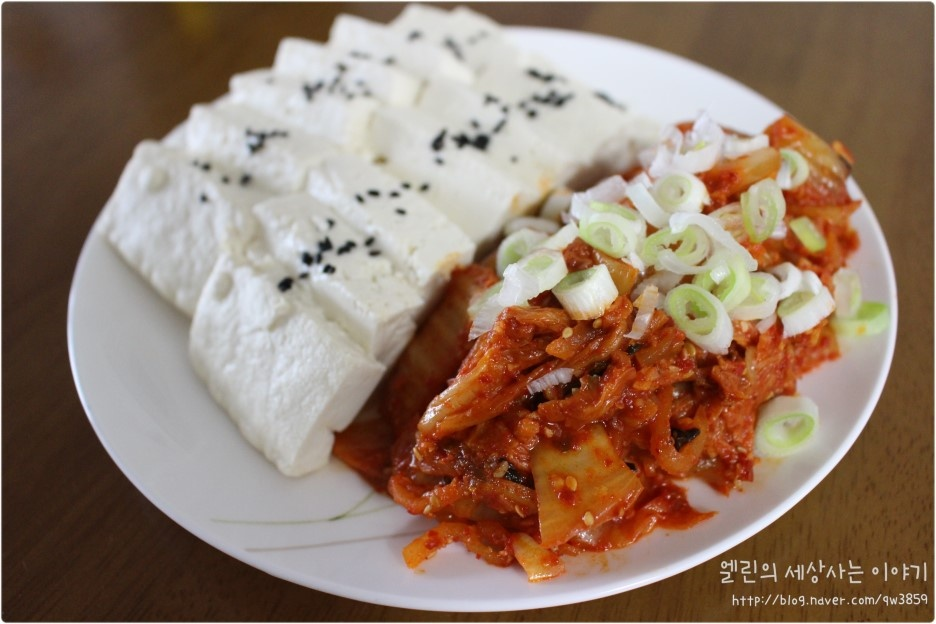

유튜브 레시피 영상
만개의 레시피
준비물 : 두부, 김치, 소금, 통깨, 설탕, 다진마늘, 고춧가루, 참기름
조리법
1. 김치를 먹기 좋은 크기로 자른다.
2. 기름을 두른 후라이팬에 김치를 올려 볶는다.
3. 뒤적거리다 설탕 1/2큰술, 다진마늘 1/2큰술, 고춧가루 1큰술을 넣는다.
4. 어느 정도 볶은 후 참기름 1큰술을 넣고 한번 더 볶아 마무리한다.
5. 냄비에 소금을 티 스푼으로 12큰술 넣어주고 두부를 살짝 데친다.
*여담: 군대식 레시피는 돼지고기 김치볶음 레시피에다가 귀찮다고 두부까지 같이 넣고 볶아버리는 형태로 발전했다.
유튜브 레시피 영상
준비물 : 파스타면, 채썬 양파, 청양고추, 베이컨, 올리브유, 고춧가루, 다진마늘, 토마토소스, 물엿
조리법
1. 끓는 물에 소금 1술 넣고 파스타면을 3~4분만 미리 삶는다.
2. 팬에 고춧가루 1술,다진마늘 1술, 올리브유 1술 넣고 약불에 볶는다.
3. 손질해 놓은 양파, 청양고추,베이컨을 넣고 양념과 함께 볶는다.
4. 토마토소스 1종이컵, 물엿 한 바퀴, 물 2종이컵 붓고 강불에 섞어주며 끓인다.
5. 설익은 파스타면을 넣어 2~3분 가량 다시 함께 끓인다.
6. 후추를 뿌려 섞는다.
*여담: 만개의 레시피에는 없는 퓨전 요리이다.